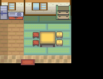

014 进化之谜
一句话目标：接受若叶镇女孩的委托，带着她的皮皮旅行并让它“孕育”出皮宝宝，再把皮宝宝带回去给她看。
接取地点
- 若叶镇（地图 43:4），镇内 (4,4) 附近的女孩（local_id 1）。
- 当前目录描述：帮助若叶镇的女孩探究有关皮皮的进化之谜。
准备条件
- 需先推进主线到入口判断的前置旗标（事件入口
0x08AE55A8先检查该旗标，满足后才出现带委托的对话；具体剧情点未解释）。 - 背包/队伍无需特殊道具；任务本身会赠送皮皮。
操作步骤
- 前往若叶镇，与 (4,4) 附近的女孩对话。前置未满足时她只讲“皮卡丘竟然是已经进化了的精灵哦”一类话题；满足后她会说明在空木博士发表皮卡丘已进化的研究后，怀疑皮皮也是已进化的宝可梦，并请求你带皮皮去旅行、探究皮皮能否孕育出新品种。
- 答应委托后出现“接受任务:<进化之谜>”，随后皮皮（35，Lv5，携带苹野果）加入你的队伍。
- 带着皮皮旅行，使其“孕育”出皮宝宝（173）。女孩的原话是“去探究皮皮是否也能孕育出新的宝可梦品种”。
- 让皮宝宝（173）留在同行队伍中，回去与女孩对话。她会说“这就是……皮皮所孕育出的宝可梦吗？是从来没有见过的宝可梦呢”，并交付报酬。
交付检查
- 队伍中携带皮宝宝（173）时与女孩对话即判定通过；判定失败时会说“这只宝可梦……怎么也看不出是皮皮孕育出来的吧？”。
奖励
- 月之石 ×1
- 4000$
- 4 BracerPoints
容易卡住的位置
- “孕育”指皮皮生出皮宝宝，需要把皮皮带在身边培养，而不是直接捕捉或进化皮皮本身。
- 队伍里没有皮宝宝时对话不通过，注意别把它放进电脑。
- 前置未满足时只出现无关的皮卡丘闲谈，不是对话 bug。
来源与待补
- 包：
data/quest_packets/014.json；入口脚本0x08F50268，接取/交付脚本0x08AE651F、0x08AE6609、0x08AE6F01、0x08AE665E、0x08AE6A68、0x08AE6F2F。 - 相关宝可梦：皮皮、皮宝宝；相关道具：月之石。
- 未定位：“让皮皮孕育出皮宝宝”的具体机制（培育屋、道具或特殊事件）在包内没有对应指令，只能确认交付时按物种 173 检查。
地点地图
共享RGB底图；点击可缩放定位。数字对应本页相关地点，不代表地图上全部事件。
若叶镇

1 进化之谜（4,4）